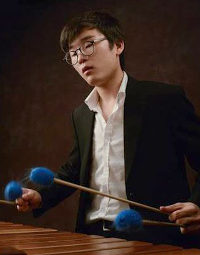
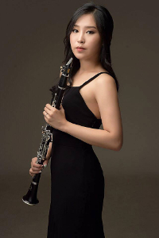
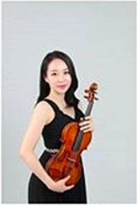
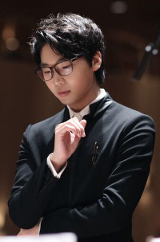
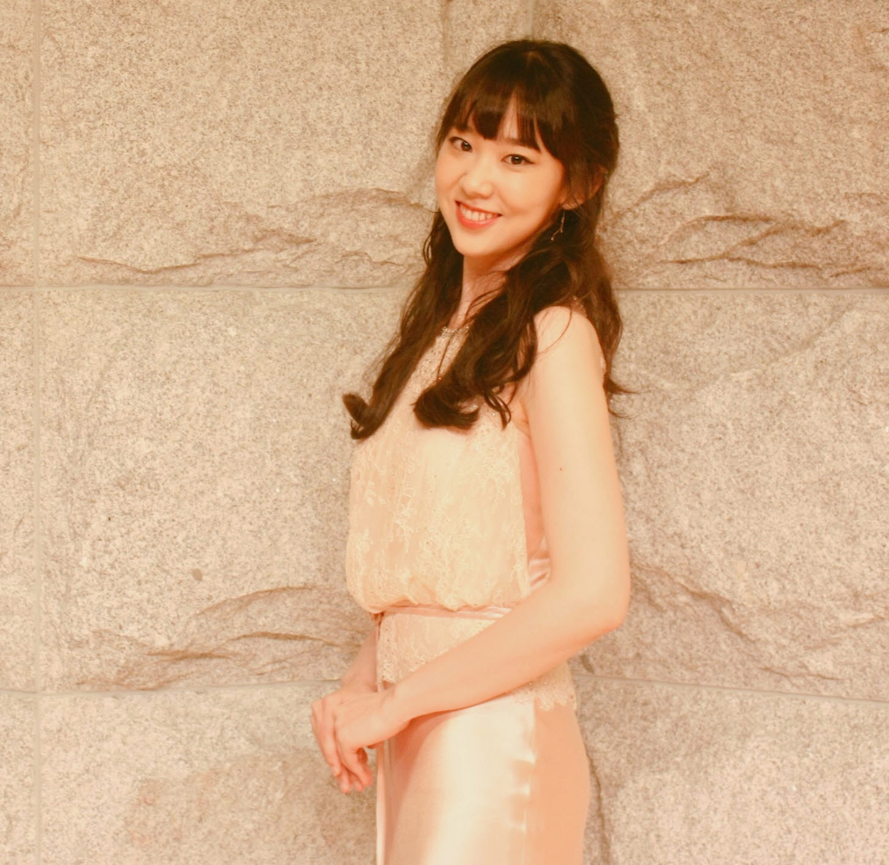
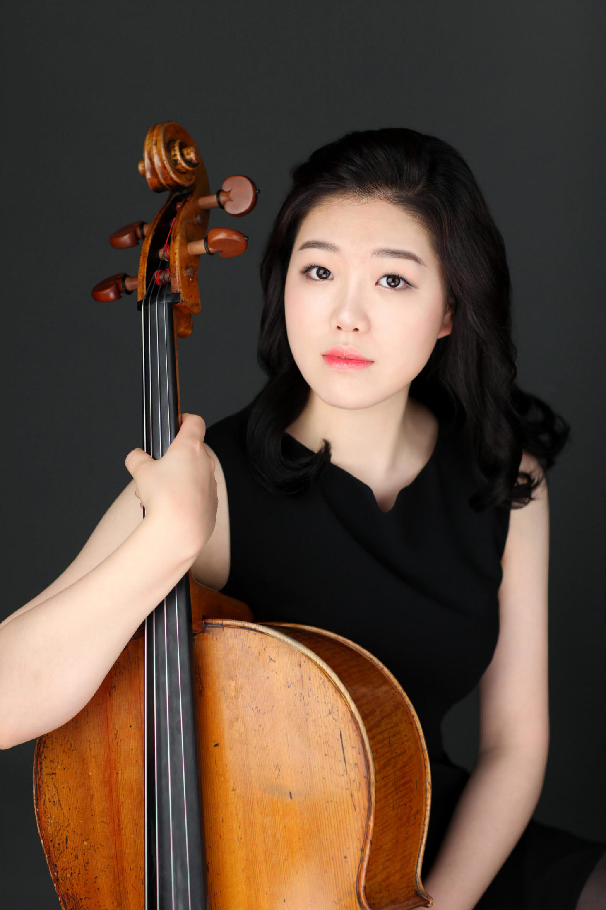

- Master's Degree at Manhattan School of Music
- Bachelor's and Master's Degrees at The Juilliard School
- 2017 KumHo Young Artist Solo Recital

Percussionist WonSeok Lee
- Master's Degree at Temple University
- Bachelor's Degree at The Curtis Insitute of Music
- Performed with The Philadelphia Orchestra

Clarinetist MoonSun Yoo
- Bachelor's Degree at The Juilliard School
- 1st Place at The East Coast International Competition
- 1st Place at Seoul Philharmonic Contest

Violinist Jin Yoo Lee
- Master's Degree at Yale School of Music.
- Bachelor's Degree at Haute Elcole de Musique de Lausanne.
- 1st Place at Eslie de Ridder Armstrong Chamber Music Competition.

Composer/Conductor Jae Hyuck Choi
- Bachelor's Degree at The Juilliard School.
- Commissioned Works for ASCAP, GuaCheon Orchestra,
Ensemble CRUSH, New York Virtuoso Singer

Pianist Da Hyun Jeong
- PhD Degree at Seoul National University
- Bachelor's Degree at The Juilliard School
- 1st Place at The International Chopin Piano Competition in Asia
- Awarded The Best Chopin Solo Work Player

Cellist BitNari Bong